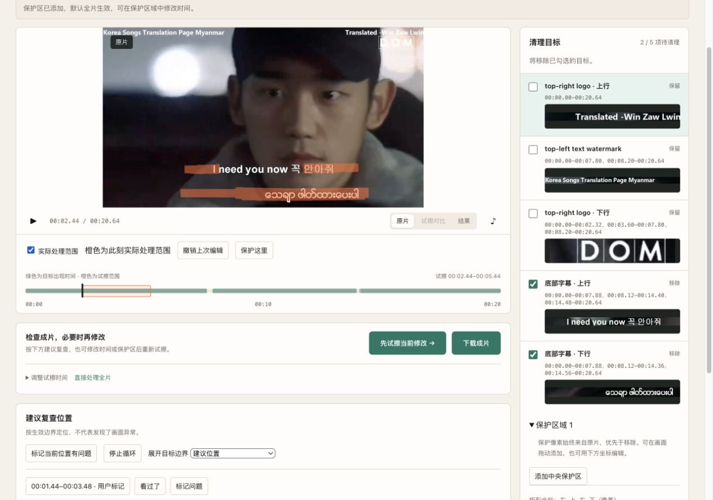
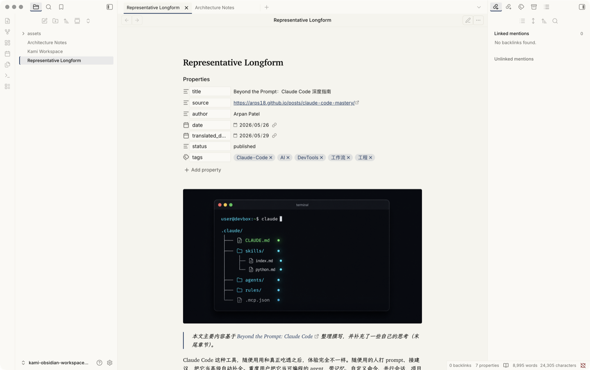
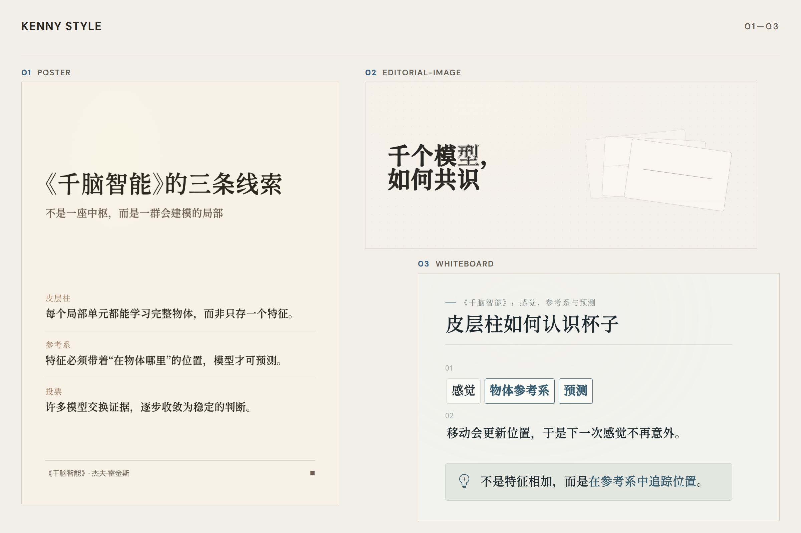
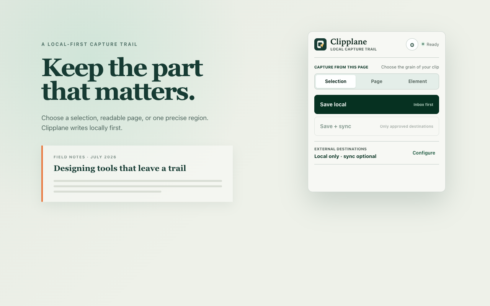
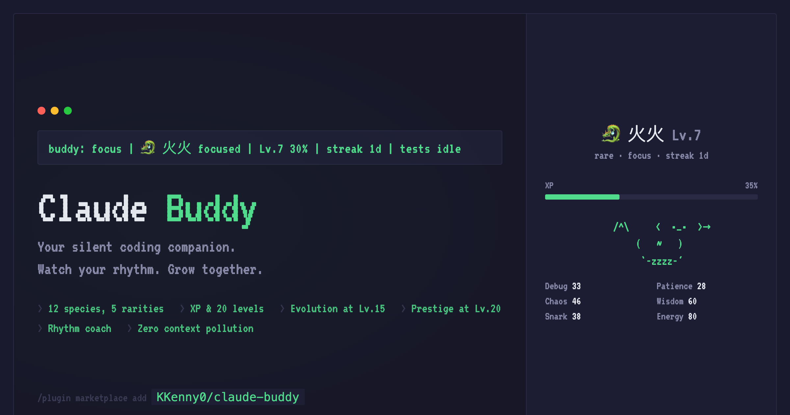
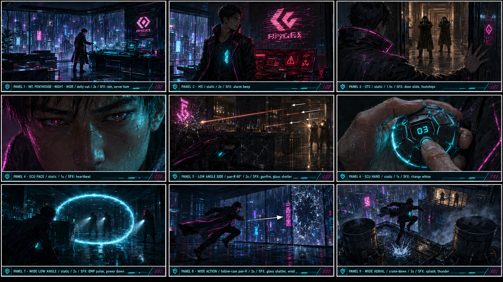
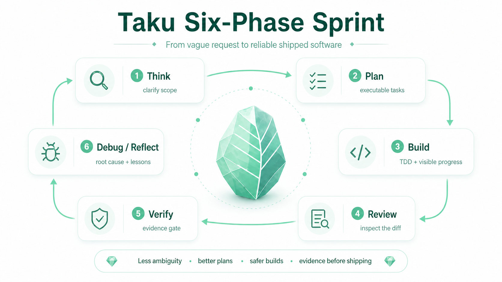

VideoWipe ↗
Remove burned-in subtitles, watermarks, and overlays from video.
PROJECTS / TOOLS & EXPERIMENTS
These are tools and public experiments I build independently. For professional delivery work, see About.

Remove burned-in subtitles, watermarks, and overlays from video.

Bring the feel of reading on paper to Obsidian.
Stars / forks cover 26 non-fork public repositories. The index contains 21 active and 2 archived projects, excluding profile, configuration, and this website’s repositories.
REPOSITORY INDEX
23 projects (including archived)
Explore Macao through an interactive heritage route.
A 2D/3D map with 20 heritage stops, independent shops, historical notes, and linked place details.
No public preview is available for this project. Code and documentation are on GitHub.
A daily Chinese digest of AI and agent discussions.
Selected Hacker News threads become Chinese analysis with links back to the original discussions.
No public preview is available for this project. Code and documentation are on GitHub.
Turn a story premise into scripts and storyboards.
An agent-driven screenplay and storyboard engine with a web workbench, CLI, editable production artifacts, and video prompts.
No public preview is available for this project. Code and documentation are on GitHub.
Turn content into visual work, with quality checks built in.
Create posters, infographics, whiteboards, and reading cards from the structure of your content. Visual checks help the layout and imagery explain the ideas together.

Selected examples
Remove burned-in subtitles, watermarks, and overlays from video.
Burned-in subtitles and watermarks can limit how footage is reused. VideoWipe connects local detection, human review, and removal through a Python API, web interface, and CLI.
Workspace screenshot
A continuous reading and editing workspace in Obsidian.
A desktop Obsidian plugin with Reading Stage, Focus Mode, adaptive document width, and a temporary white-page preview. It works with the default theme.
No public preview is available for this project. Code and documentation are on GitHub.
Bring the feel of reading on paper to Obsidian.
An Obsidian theme for sustained reading and writing. Warm paper tones, ink-blue accents, and serif text keep the focus on your notes, in both light and dark modes.
light-modeWorkspace screenshot
Keep the reasons behind the changes.
Capture decisions, rejected approaches, and risk boundaries. From session records and cited decision queries to daily, weekly, and monthly reports, leave a trail that helps you reconstruct your reasoning.
Project artwork
Keep the words that matter on your own computer first.
Send selected text to an org-mode inbox through a browser extension and local host. Keep an inspectable capture history, then choose whether to sync to Notion or flomo.

Store artwork
Local image cleanup and screenshot simulation.
A JavaScript tool for processing image traces and simulating screenshot output. See the repository for its methods and limits.
No public preview is available for this project. Code and documentation are on GitHub.
Build daily notes from Git and agent sessions.
A standalone workflow for generating or updating Markdown daily notes from commits and session evidence, without building long-term work memory.
No public preview is available for this project. Code and documentation are on GitHub.
Find a framework that makes sense of the question.
Use three research paths to choose frameworks, test arguments, and compose evidence-backed long-form writing in Chinese, preserving sources, disagreements, and limits.
Project logo · No UI screenshot available
A small companion in your Claude Code statusline.
Long sessions with an agent need a sense of rhythm. BuddyBar adds a virtual pet to the statusline that follows your pace, offers gentle reminders, and grows as you work.

Historical artwork · Formerly Claude Buddy
Use clear constraints for coherent characters and action.
Define constraints for panel grids, shared art direction, camera rhythm, and physical action to reduce character drift and motion errors across a storyboard.

Storyboard example
Choose useful questions for a reverse interview.
A Claude Code skill with more than 150 interview questions, five-dimensional tags, and guidance for different interview situations.
No public preview is available for this project. Code and documentation are on GitHub.
An extended guide to human system optimization.
A GitBook extension of the Human System Optimization guide, with collected material organized for reading.
No public preview is available for this project. Code and documentation are on GitHub.
Explore graph-based retrieval through visualization.
A Streamlit application for inspecting graph-based retrieval, data, and embeddings through interactive visualization.
No public preview is available for this project. Code and documentation are on GitHub.
A retrieval agent that plans as evidence arrives.
An experimental OmniSearch implementation using Ollama multimodal models and DuckDuckGo search for adaptive retrieval.
No public preview is available for this project. Code and documentation are on GitHub.
A competition solution for Chinese text matching.
The published implementation of a text-matching competition solution, retained as a research and engineering record.
No public preview is available for this project. Code and documentation are on GitHub.
A customized PyTorch BERT library for experiments.
A customized BERT implementation based on pytorch_pretrained_BERT, with hierarchical position encoding and word-based WoBERT support.
No public preview is available for this project. Code and documentation are on GitHub.
The archived predecessor of weave.
Historical research and thinking skills for Claude Code. This repository is archived; continued research workflows live in weave.
No public preview is available for this project. Code and documentation are on GitHub.
Give coding agents sound engineering habits.
Turn scope, evidence, and verification into reusable habits so coding agents can keep intent clear and context manageable through complex tasks.

Workflow diagram
LET’S WORK TOGETHER
Let’s discuss the technical approach, engineering delivery, quality, and reliability.
Turn sources into social copy and visual briefs.
A skill that organizes source material into platform-ready copy and self-contained briefs for visual production.
No public preview is available for this project. Code and documentation are on GitHub.